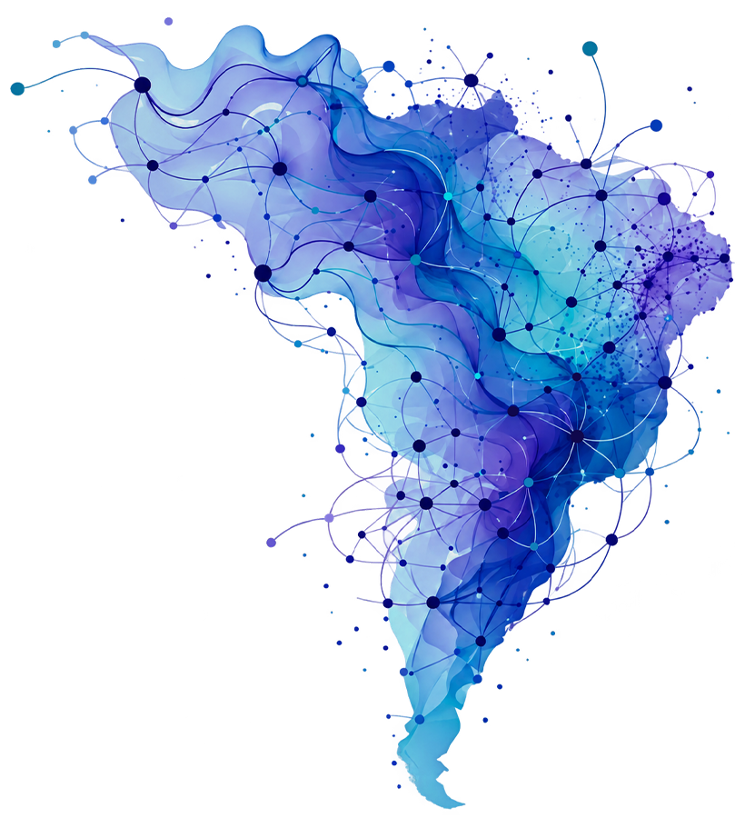

Submissão de resumo em breve.

Os desafios da Sociologia e democracia em um mundo digital
O Seminário Nacional de Sociologia do PPGS-UFS chega à sua sexta edição, com o título “Os desafios da Sociologia e democracia em um mundo digital”, consolidando mais de uma década de contribuições para as pesquisas na área. Com sua primeira edição em abril de 2016 e a manutenção bienal ao longo da última década, o evento reúne pesquisadores de todo o país, o que o posiciona como um dos principais eventos das Ciências Sociais realizados na região Nordeste.
O evento é organizado pelo Programa de Pós-Graduação em Sociologia da Universidade Federal de Sergipe (PPGS-UFS), criado em 1987 e que, em 2026, completa 39 anos de atuação na formação de professores e pesquisadores em Sociologia. Além disso, as suas linhas de pesquisa têm integrado importantes redes, qualificando a produção científica no país.
“Os desafios da Sociologia e democracia em um mundo digital”VI SNS · 2026
Nessa edição, o desafio é pensar os principais temas da Sociologia em um mundo cada vez mais transpassado pelo digital, pelas novas tecnologias e por uma nova sociabilidade em redes. Ao mesmo tempo, o evento propõe um esforço de reflexão sobre a experiência da democracia a partir das diferentes linhas e grupos de pesquisa presentes no PPGS.
A escolha desse tema vem da constatação do interesse de mestrandos e doutorandos por pesquisas que, em algum sentido, problematizam essas transformações. Uma realidade que perpassa a própria trajetória do evento, inicialmente presencial e que, ao longo dos anos, incorporou a participação remota como parte imprescindível de sua dinâmica.
Por essas razões, convidamos estudantes, pesquisadores, professores e demais interessados a participar das atividades do VI Seminário Nacional de Sociologia do PPGS-UFS, que será realizado nos dias 9, 10 e 11 de novembro de 2026.
| Data | Atividade |
|---|---|
| 07/08 a 02/09 | Submissão de propostas de Mesas Redondas, Minicursos, GTs e Oficinas |
| 07/09 | Divulgação das propostas aprovadas |
| 07/09 a 21/09 | Submissão de resumos |
| 28/09 | Resultado dos resumos aprovados |
| 31/10 | Envio dos papers completos |
| 09 a 11/11 | VI Seminário Nacional de Sociologia |
| Horário | 09/11 | 10/11 | 11/11 |
|---|---|---|---|
| 8h – 9h | Credenciamento | Credenciamento | Credenciamento |
| 9h – 11h | GTs | GTs | GTs |
| 11h30 – 13h | Oficinas | Oficinas | Oficinas |
| 14h30 – 16h | Mesas-redondas | Mesas-redondas | Mesas-redondas |
| 16h – 16h30 | Coffee-break | Coffee-break | Coffee-break |
| 16h30 – 18h | Mesas-redondas | Mesas-redondas | Mesas-redondas |
| 19h30 – 21h30 | Conferência de Abertura | Conferência de Meio | Conferência de Encerramento |
Confira as informações essenciais para enviar seu resumo. As regras completas de envio e de formatação do paper estão na página dedicada.
Confira os resumos aprovados por GT para apresentação no VI Seminário Nacional de Sociologia.
As inscrições para o VI Seminário Nacional de Sociologia estarão abertas até o dia 06 de novembro de 2026 e deverão ser realizadas exclusivamente pelo Portal de Eventos da UFS (SIGAA).
Para participar, é necessário realizar a inscrição na atividade geral do evento. Quem desejar também poderá se inscrever nas oficinas e mesas-redondas disponíveis, de acordo com a programação do seminário.
Não fique de fora! Participe dos três dias de encontros, debates e experiências que conectam diferentes olhares sobre os desafios da Sociologia e da democracia em um mundo cada vez mais digital.
O credenciamento presencial terá início no dia 09 de novembro de 2026, a partir das 8h, na Didática VII, na UFS.
Inscreva-se e participe do VI SNS!
Conheça a equipe responsável pela organização e realização do VI Seminário Nacional de Sociologia.
Período para inscrição: de 01/10/2026 a 01/10/2026
O Programa de Pós-Graduação em Sociologia (PPGS-UFS) convida estudantes de graduação e pós-graduação a participarem como monitores voluntários do VI SNS.
A participação é uma forma de vivenciar o evento por dentro e de habitar ativamente espaços de diálogo. Ao trocar experiências e fortalecer conexões com pesquisadores e estudantes de diferentes áreas, findamos por tecer a malha que fará nossa sociologia proliferante emergir.